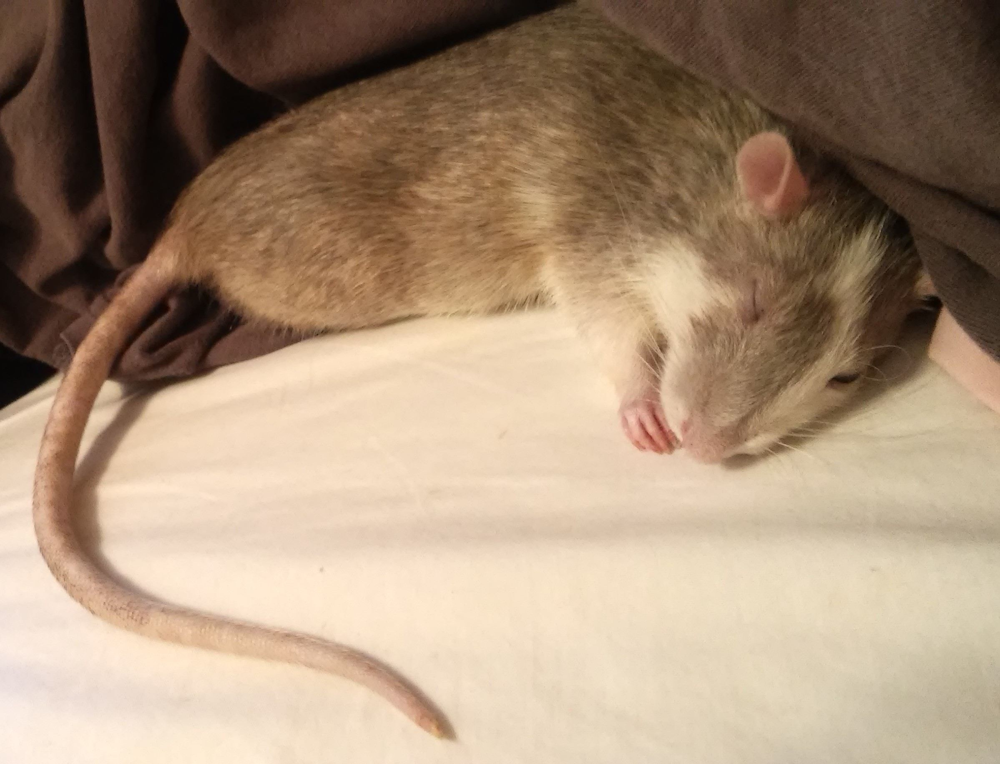
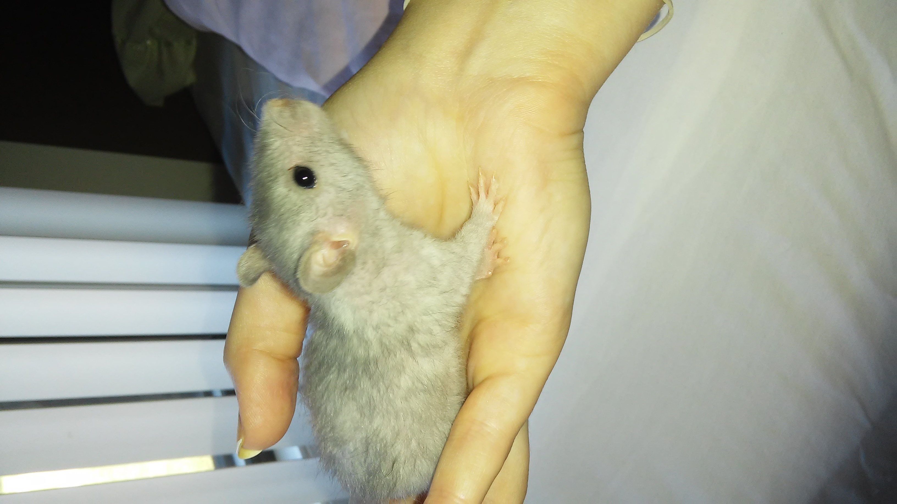
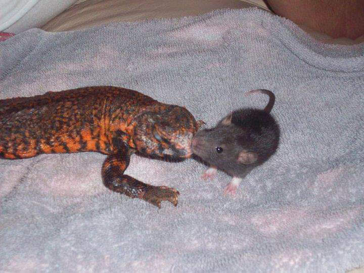
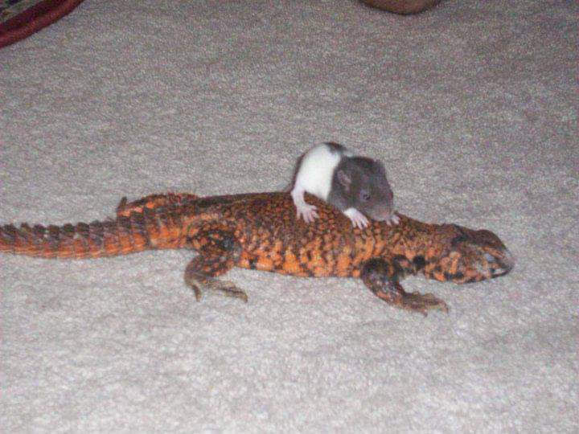
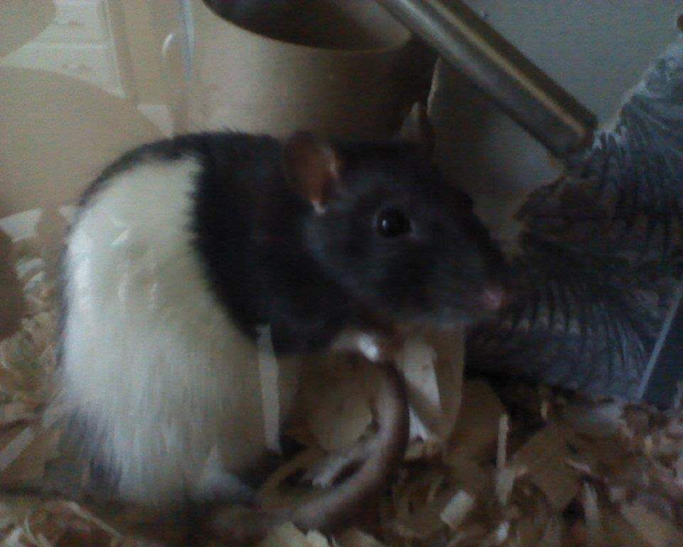
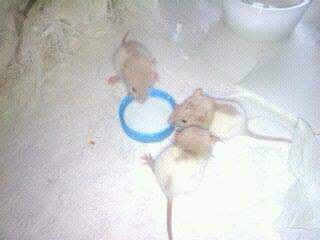

These are all my pet rats I have owned so far. Before anyone freaks
out, domesticated rats are very clean, friendly, and safe pets to have.
I began getting into pet rats towards the end of middle school in 2009
when my brother bought live feeder rats for his pet snakes. I raised Oreo
from a baby to be my pet, and adopted Audia to be her sister not long
after. Rats live an average of 2 years, which is why I have had so many
as pets in the last decade. I enjoy raising them from babies because they
get plenty of human interaction that way and are much more trusting and
friendly as they grow up. Plus they are just so cute when they are babies
with baby fur! After raising Oreo and Audia, the cycle continued over the
years and I have enjoyed all my rats for their awesome personalities and
unique attributes. Sadly all of my rats have passed on, Noodle and Pookie
were the most recent to pass in January, 2020. I have so many wonderful
memories with all my pet rats and I am very excited to be able to remember
and share these memories through this webpage.
Nina

Nina would often sleep in my bed as I did my homework or watched
movies. She was a grey rat with white marbling and a white belly.
She was a cuddler and loved nap time very much. She also loved
being scratched behind the ears as many rats do.
Choobie

I knew as soon as I saw Choobie as a baby that she was special.
Her fur color and texture were unique and I did research to find
out more. She was a Blue Double Rex Rat. This means her
fur color is Blue and she has curly whiskers and wavy fur, hence
the "double rex" description. The color "Blue" in the rat breeding
industry describes a specific shade of grey that has a blue hue.
Pooch
Pooch was a very energetic baby, but I got her to sit still for
this photo by letting her chew on my nail polish. She was a very
athletic rat who loved to run and play. She could climb up almost
anything and her sister Choobie was the same way. They would even
run up my leg, very fast, if I was standing up and wearing long
pants. It was very impressive and I have never had rats as
athletic as these two.
Tilly
I adopted Tilly admittadly for her unique coloring. I loved the
brown fur with black mixed in. She also had a white belly and white
paws, which was a very cute look. She had a couple ear infections,
but this didn't prevent her from having a full and happy life.
Marley, Fidget, and Devlin
These are my boys; Marley, Fidget, Devlin. I have a special place
in my heart for my boys, they were so affectionate and fun. I
adopted them when my brother's rat, which he bought from a pet
store, gave birth to a litter of pups a few weeks after bringing
her home. My boys had their dissagreements, some little fights
here and there, but I'll never forget how fun it was taking them
out of the cage to play, jump around, and githave a good time.
Nugget
Nugget was also a very unique rat due to her attributes. Her ears
were set a little towards the sides of her head, rather than on
top, which classifies her as a "Dumbo" rat. Her fur, in the right
lighting, also has a blue hue to it, similar to Choobie. Combined
with her fur pattern, she was a very special Hooded Blue Dumbo
rat. She loved being pet, and I have many pictures of her on her
back as I rub her belly.
Audia

This is Audia, as a baby, hanging out with my brother's lizard.
If you're not familiar, it's called a Uromastyx Lizard and they
are primarily herbivorous. My brother's lizard had a very gentle
soul and I promise the lizard was at more of a risk of danger
than the rat was. Baby rats like to teeth sometimes, but Audia
was very friendly. Not pictured is Audia's brother who,
unfortunately, died as a baby when one of my brothers snakes
escapped it's cage.
Oreo

This is baby Oreo on the lizard's back, going for a little ride.
Oreo was the first rat I ever adopted (I'm not going in
chronological order) so I was nervous for this frist rat-to-lizard
introduction. But, it went very well, and the lizard carried her
around for quite some time. My brother was usually the one with
bright ideas like this, but this one actually turned out just
fine.
Peaches

Peaches looked very similar to Oreo, my first rat, but Peaches was
much smaller than Oreo. Female rats tend to be smaller than male
rats, but Peaches was the most petite of all my rats. She never
never liked being in her cage and would chew on everything until
I took her out. She chewed through countless water bottles. These
were water bottles made from thick plastic designed for small
mammal habitats. At least her teeth stayed strimmed, they grow
continuously throughout a rats life.
Insieme, Jacob, Aldabella

The three blonde rats, as babies, are drinking from a bowl of warm
milk. I would often feed them milk using a syringe, but as they
get older, I would let them drink on their own from little caps.
Aldabella was technically my sisters rat, but these three rat
siblings got to grow up together. All the other rats pictured are
my own. Jacob was a very shy guy, Insieme was a very loving rat,
and Aldabella was fed very well and loved to show off her big
tummy.
Noodle
Here, Noodle is coming out from underneith the blanket on the
couch. Me or my sister probably called her out to come get a treat
from us. Most of my rats were trained to know that when we made
kissy noises, or a simliar noise, that they should come to us.
They were mostly motivated by food to do this. Rats are very
intelligent and can learn all kinds of tricks.
Pookie
Pookie was relaxing with her sister, Noodle, under the blanket
and poked her head out to say "hi" to the camera. She was well
trained like her sister and just loved attention, treats, and
play time. My sister helped take care of Pookie and Noodle when I
had to move closer to the city for school. They were extra
spoiled because of this and both had wonderful lives. They both
developed tumors, as many rats do, and as a result were taken to
the vet once their quality of life deteriorated.
Thank you for checking out my webpage! I hope you enjoyed learning
about something that you may have previosly not known much about. Maybe
for some people this was a bit of an eye opener that domesticated rats
are a great option for a pet and the stigma behind rats is note is not
necessarily true. I thoroughly loved all of my rats and found great
joy in giving them spoiled lives rather then being doomed to be snake
food.